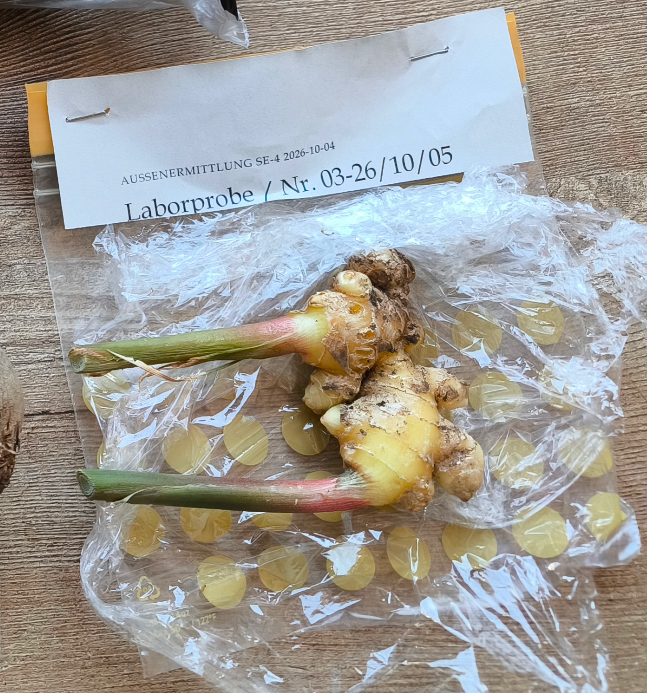
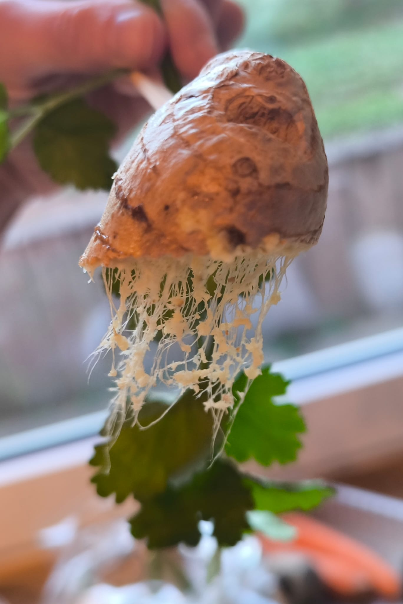
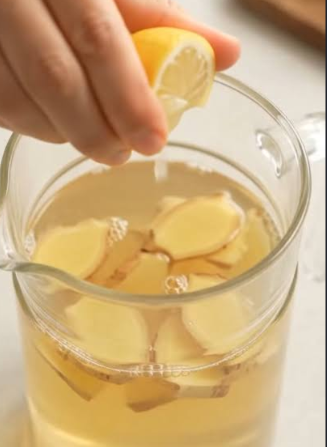

Laborbericht Nr. 03 Wurzelverdacht – ein scharfes Aroma
Stammdaten
Untersuchungsauftrag
Herstellung verschiedener wässriger Lösungen und Abriebe unter kontrolliertem Einsatz mechanischer und thermischer Energie. Erstellen von wässrigen Lösungen und deren Überprüfung auf PFAS und C2H5OH.Probenbeschreibung und Eingangsbefund



Eingangsbefund
Rhizomstücke mit grün-roten Stängelansätzen wurden im unbeschädigten, manipulationssicheren Zustand verwahrt und für die toxikologische Analyse freigegeben.
Durch die bereits erfolge Vorbehandlung durch CI-D konnte im Rahmen der Probeneingangsprüfung eine charakteristische faserige Gewebestruktur mit einem ausgeprägten aromatischen Profil festgestellt werden.
Methodik
Siehe Verfahrenshandbuch_25: T/E/E und Cit_Rus_Lim04. Auf Anweisung des Laborleiters zusätzlich nach Dark&Stormy 2024.
Messergebnisse
| Messwert | T/E/E | Cit_Rus_Lim04 | D&S, 2024 |
|---|---|---|---|
|
PFAS-Gehalt (µg/l) |
< 0,001 (n.n.) |
< 0,001 (n.n.) |
< 0,001 (n.n.) |
|
C₂H₅OH-Gehalt (Vol.-%) |
0,00 | 0,00 | 11,40 |
|
6-Gingerol (mg/l) |
12,50 | 9,80 | 2,10 |
Hinweis: n.n. = nicht nachweisbar
Auswertung und Interpretation
Das erhaltene Spektrenprofil ist mit einer pflanzlichen Matrix vereinbar. Der Abgleich mit Referenzdaten zeigt in allen drei Proben eine eindeutige qualitative Übereinstimmung mit dem pharmakologisch aktiven Scharfstoff 6-Gingerol. Die durchgeführte Untersuchung auf per- und polyfluorierte Alkylsubstanzen (PFAS) ergab in keiner der drei untersuchten Proben einen auffälligen Befund. Aus analytischer Sicht ergeben sich keine Hinweise auf eine entsprechende Kontamination oder gezielte chemische Modifikation. Ein anthropogener Eintrag von PFAS kann für alle Proben ausgeschlossen werden. Die chemisch-analytische Sonderprüfung der Probe D&S belegt jedoch einen signifikanten C2H5OH-Peak. Das chromatografische Profil weist hierbei spezifische Ester- und Begleitalkohol-Rückstände auf, die mit einem fassgelagerten Zuckerrohr-Destillat korrelieren.
Kriminalistischer Abgleich
Die analytischen Ergebnisse wurden mit den vorliegenden Ermittlungsinformationen abgeglichen. Ein Zusammenhang mit der dokumentierten Verabreichung eines nicht näher spezifizierten Hygge-Getränks durch Deputy-D ist nicht auszuschließen. Insbesondere der signifikante C2H5OH-Peak sowie die nachgewiesenen Ester- und Begleitalkohol-Rückstände der Probe D&S lassen eine entsprechende Verbindung als möglich erscheinen. Eine eindeutige Zuordnung des untersuchten Destillats zu Deputy-D oder zu einem konkreten Ereignis ist anhand der vorliegenden Befunde jedoch nicht möglich.
Gesamtbewertung
Die untersuchten Proben konnten botanisch und chemisch-analytisch weitgehend eindeutig charakterisiert werden. Die qualitative Übereinstimmung mit 6-Gingerol bestätigt die Zuordnung des pflanzlichen Materials zu Ingwer. Ein anthropogener Eintrag von PFAS konnte für sämtliche untersuchten Proben ausgeschlossen werden. Eine pharmakologische Bewertung des Getränks ist mangels Referenzmaterial nicht möglich.
Aktenvermerk des Zentrallabors
Die PFAS-Spur ist ausgeschlossen. - Das Destillat ist auffällig. Die SOKO Zentrale empfiehlt, die Umstände der dokumentierten Getränkegabe im Rahmen der weiteren Ermittlungen zu berücksichtigen.